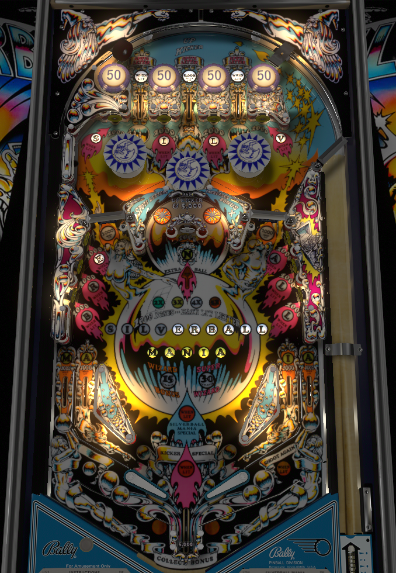

Find a reliable way to shoot the horseshoe and do it all day. Even a spinner lit for 1,000 a spin doesn't come close to matching the reward that the horseshoe shot gives you.
The goal of Silverball Mania is to spell Silverball Mania. The S, I, L, and V targets face the bottom of the playfield, but cannot be shot directly and need to be spotted or bounced into by the bumpers. The E, R, and B are left standups, while the A, L, and L are right standups. The M and second A in Mania are on the outlanes, the first A and I are in lanes, and the N is a deadly center target. Silverball Mania letters can be spotted by lit top lanes or by the horseshoe shot.
Each letter in Silverball Mania gives 1,000 points in bonus. Completing Silverball Mania once lights the Wizard Bonus, which adds 15,000 to the bonus. Completing Silverball Mania a second time turns the Wizard Bonus into Super Wizard, which is worth 30,000 for the bonus. The 3rd completion lights the Kicker Special, and every completion starting with the 3rd is worth a special in its own right. (If they do not give free games, Specials are worth 50,000 points.)
The horseshot shot does everything. Going around the mini-loop awards 5,000 points, advances the bonus multiplier, activates the center kickback, and spots either one or two Silverball Mania letters.
Depending on the game's settings, extra ball will be lit at the standup target in the center of the horseshoe either at the same time as the 5X bonus, or by making the horseshoe shot once more after advancing to 5X. In tournament play, extra balls in this game are generally worth 25,000 points.
There are two star rollovers within the horseshoe itself. Only one needs to be hit for the game to credit the shot, but there's a brief delay in place so that a single shot can't trigger both rollovers. However, if a weird bounce or a particularly weak shot puts the ball through the horseshoe very slowly, you can get double credit for a single shot, but it's difficult to do intentionally.
This shot is valuable enough to be the only thing worthing trying for. If possible, practice the machine and determine what the easiest horseshoe shot is (which flipper to shoot from, and whether a forehand or backhand is better).
The center top lane and horseshoe shot light a center kickback between the two flippers. If the ball falls into the kicker, it is sent back into play and used up, and 5,000 points are scored. Small pins in the out lanes make it possible for a ball to deflect onto a rail that leads to the center kicker even if the ball goes out lane insted of center drain.
The center kicker tends to shoot the ball back into play with less speed than a flipper. It is sometimes more reliable or safer to let the kicker hit the center N target for the letter or extra ball, especially if the flippers are so strong that shooting for the N directly doesn't always work. With this, though, comes the risk that the center kicker is so on target that the return comes straight back into the drain through the now-used kicker.
After completing Silverball Mania three times, the Kicker Special is lit, and is cashed in the next time the kickback is successfully used. In competition play, this serves as 50,000 points, just like any other special. In casual play, though, the kicker special lights one of the letters in Silverball on the bottom left of the backglass. This is a carryover award that can be worked toward over many games. If your kicker special lights the last letter in backglass Silverball, you win the carryover special, which defaults to being worth three free games.
(In competition play, the letters that form backglass Silverball typically are just tied to the Silverball letters used during standard gameplay.)
There are 3 top lanes, which alternate between the outer two being lit and the middle one being lit with each hit to the 50-point bumpers. A top lane being lit only determines whether or not it spots a letter in Silverball Mania. The outer lanes are worth 500 points, and the center lane is worth 5,000 points and lights the center kickback. It's possible to get decent up-and-down action from the center lane, making repeated 5,000s possible for a brief time.
There are two spinners, one on each side, worth 100 points a spin to start. Once Silverball Mania is completed once, one spinner (alternating) will be lit for 1,000 points per spin. Even a lit, well-lubed spinner is highly irrelevant to scoring, though. There's no reason to ever intentionally shoot for these.

All copyrighted names and terms in this document belong to their respective owners. The information provided in this document is for educational purposes only and no infringement is intended.
Back to top To game list To main page